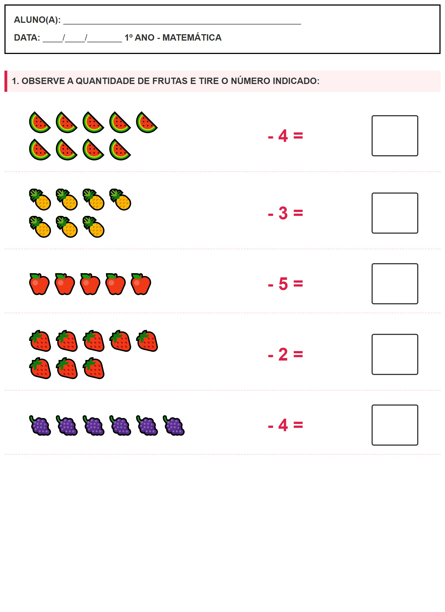

← Voltar ao Portal
ALUNO(A):
________________________________________________
DATA:
____/____/_______
1º ANO - MATEMÁTICA
1. OBSERVE A QUANTIDADE DE FRUTAS E TIRE O NÚMERO INDICADO:
🍉🍉🍉🍉🍉
🍉🍉🍉🍉
- 4 =
🍍🍍🍍🍍
🍍🍍🍍
- 3 =
🍎🍎🍎🍎🍎
- 5 =
🍓🍓🍓🍓🍓
🍓🍓🍓
- 2 =
🍇🍇🍇🍇🍇🍇
- 4 =
Visualização da Folha de Atividade
